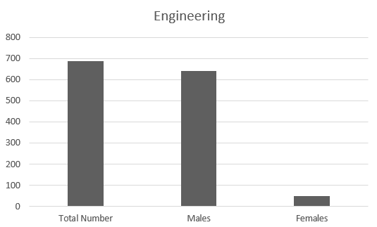

In this field, you'll dive into the core principles of engineering—everything from design and mechanical analysis to electrical circuits. You'll develop problem-solving skills, learn to innovate, and work with essential engineering tools. By the end of the course, you'll be well-prepared to enter the engineering world or pursue further studies in the field
Enrollment and Distribution Statistics

- Enrolled Students
The chart illustrates the enrollment statistics for the Engineering specialty. With a total of approximately 700 students, the data indicates a strong inclination among young males toward this field, as reflected in the higher enrollment figures for males compared to females. This trend highlights the popularity of Engineering among male students
The team collected this data from BTEC EMIS-vocational Dept, and it pertains only to Zarqa Governorate